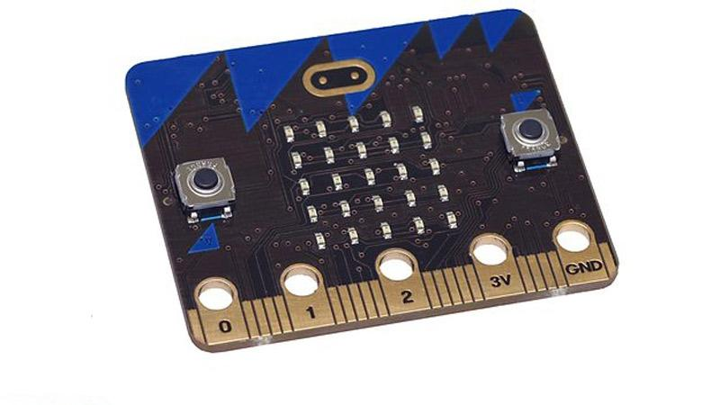
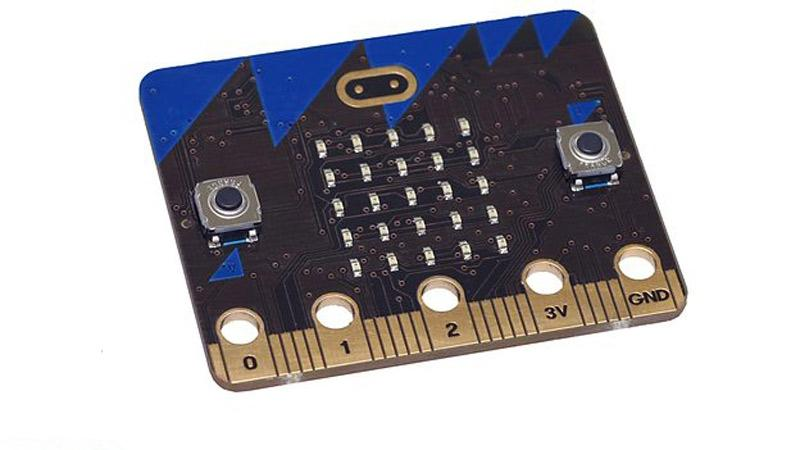

Edyookayshun
Educayshon
Education
(A process of refinement)
Nicholas H.Tollervey / @ntoll
Hardware
(Edyookayshun)
Software
(Educayshon)
Culture
(Education)
 

2. Software
Mu
a Python editor for beginners
(It's the real thing!)
3. Culture

How do we get from this...

... this ...

... this ...

... or this ...
500 years of music education
(Good artists copy, great artists steal)
https://codegrades.com/
Education makes our future possible.
What that future is depends upon who turns up to
provide such education.
Don't just sit there, do something!